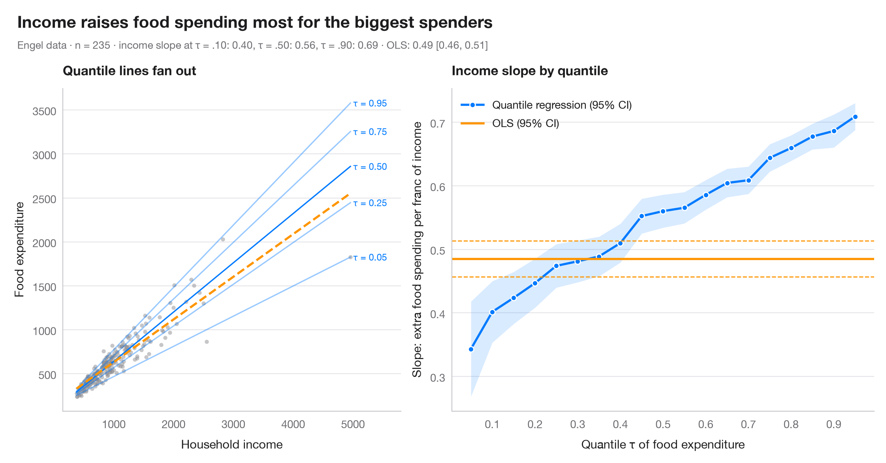

分位数回归过程
斜率如何随条件分布变化，并与单一的 OLS 估计相对照。

OLS 只估计一个斜率：对条件均值的效应。分位数回归则为每个条件分位数 τ 估计一个斜率，从而可以看出某个预测变量是在拉伸分布，而不仅仅是平移分布。深色线是 τ = 0.05 … 0.95 时的分位数回归系数及其 95% 置信带；橙色线和虚线分别是 OLS 估计及其 95% 置信区间，按构造为常数。左图展示数据以及若干条拟合的分位数回归线。
数据为 Engel（1857）对 235 个比利时工人家庭的家庭预算调查，由 statsmodels 自带（sm.datasets.engel）。模型用 smf.quantreg().fit(q=τ) 和 smf.ols() 拟合。
代码及图中文字均为英文。
import matplotlib.pyplot as plt
import numpy as np
import statsmodels.api as sm
import statsmodels.formula.api as smf
# Data: Engel food expenditure vs household income (Belgian francs)
df = sm.datasets.engel.load_pandas().data
quantiles = np.arange(0.05, 0.96, 0.05)
# Fit one quantile regression per τ and keep slope + 95% CI
rows = []
for q in quantiles:
fit = smf.quantreg("foodexp ~ income", df).fit(q=q)
lo, hi = fit.conf_int().loc["income"]
rows.append((q, fit.params["Intercept"], fit.params["income"], lo, hi))
qr = np.array(rows)
ols = smf.ols("foodexp ~ income", df).fit()
ols_lo, ols_hi = ols.conf_int().loc["income"]
fig, (ax1, ax2) = plt.subplots(1, 2, figsize=(11, 5), gridspec_kw=dict(width_ratios=[1, 1.25]))
# Left: data with selected quantile lines and the OLS line
ax1.scatter(df.income, df.foodexp, s=14, color="#8E8E93", alpha=0.5, lw=0)
x = np.linspace(df.income.min(), df.income.max(), 50)
for q, a, s_, *_ in qr[[0, 4, 9, 14, 18]]:
ax1.plot(x, a + s_ * x, color="#007AFF", lw=1.2, alpha=0.4 + 0.6 * (q == 0.5))
ax1.text(x[-1] * 1.01, a + s_ * x[-1], f"τ = {q:.2f}", fontsize=8.5, color="#007AFF", va="center")
ax1.plot(x, ols.params["Intercept"] + ols.params["income"] * x, color="#FF9500", lw=2, ls="--")
ax1.set_xlim(right=x[-1] * 1.17)
ax1.set_xlabel("Household income")
ax1.set_ylabel("Food expenditure")
ax1.set_title("Quantile lines fan out", fontsize=12)
# Right: slope estimates across τ vs the OLS slope
ax2.fill_between(qr[:, 0], qr[:, 3], qr[:, 4], color="#007AFF", alpha=0.15, lw=0)
ax2.plot(qr[:, 0], qr[:, 2], "o-", color="#007AFF", ms=5, mec="white", mew=1, label="Quantile regression (95% CI)")
ax2.axhline(ols.params["income"], color="#FF9500", lw=2, label="OLS (95% CI)")
for v in (ols_lo, ols_hi):
ax2.axhline(v, color="#FF9500", lw=1, ls="--")
ax2.set_xticks(np.arange(0.1, 1.0, 0.1))
ax2.set_xlabel("Quantile τ of food expenditure")
ax2.set_ylabel("Slope: extra food spending per franc of income")
ax2.legend(loc="upper left")
ax2.set_title("Income slope by quantile", fontsize=12)
slope = dict(zip(np.round(qr[:, 0], 2), qr[:, 2]))
fig.text(0.01, 1.07, "Income raises food spending most for the biggest spenders",
fontsize=15, fontweight="semibold", va="bottom")
fig.text(0.01, 1.02, f"Engel data · n = {len(df)} · income slope at τ = .10: {slope[0.1]:.2f}, "
f"τ = .50: {slope[0.5]:.2f}, τ = .90: {slope[0.9]:.2f} · OLS: {ols.params['income']:.2f} "
f"[{ols_lo:.2f}, {ols_hi:.2f}]", fontsize=9.5, color="#6E6E73", va="bottom")
plt.show()
图表使用了可选的 PyStatlas 样式：添加 plt.style.use("pystatlas.mplstyle") 即可完全还原其外观。
如何引用
PyStatlas 由 Thierry Warin 创建并维护。如果它对你的工作有所帮助，敬请引用。
Warin, T. (2026). Quantile regression process. In PyStatlas: The Python Gallery of Statistical Graphics. https://warint.github.io/pystatlas/regression-models/quantile-regression/
@misc{warin2026statlas,
author = {Warin, Thierry},
title = {PyStatlas: The Python Gallery of Statistical Graphics},
year = {2026},
howpublished = {\url{https://warint.github.io/pystatlas/}},
note = {Source code: https://github.com/warint/pystatlas}
}